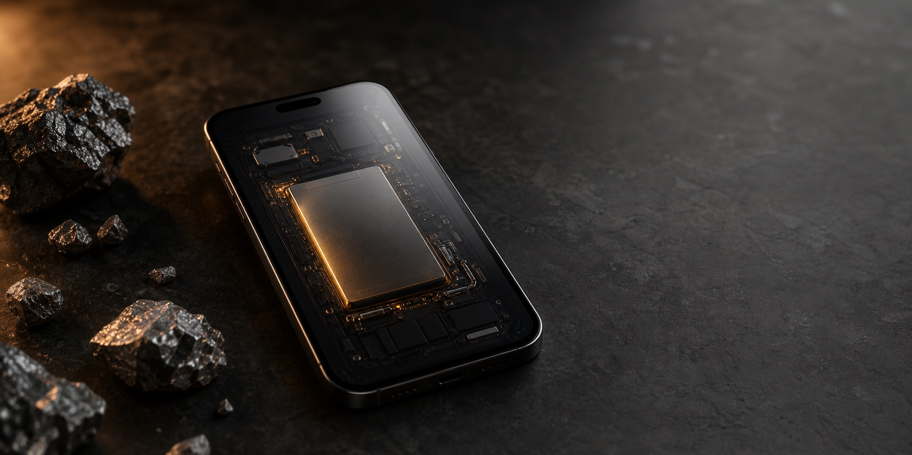

Page 1 of 2
What is the cobalt cost of your phone?
Search your model. Get a fast estimate linked to Congo, labour pressure, wages, and battery CO2e.
Phone model
Search your phone
Model not found?
Page 2 of 2
Apple
iPhone 15 Pro Max
Battery: 4,422 mAh
Your phone may contain about
11.1g
estimated range: 7.7-14.5g cobalt
Cobalt helps power lithium-ion batteries. The question is not only how much is inside, but who and where the supply chain touches.
Estimated from battery capacity and typical cobalt-containing lithium-ion battery chemistry.
Tap an impact
This phone estimate links battery size to cobalt demand, Congo exposure, labour pressure, and battery emissions.
Congo connection
Higher battery capacity usually means more cobalt demand and a larger supply-chain risk footprint.
Congo exposure
82 / 100
Class impact
Awareness takeaway
Keep phones longer, repair before replacing, and recycle old devices responsibly. Less replacement means less pressure for newly mined battery minerals.
Estimate basis
Cobalt is estimated from battery capacity. Congo exposure, labour, wage, and people numbers are awareness proxies, not proof about a specific brand.